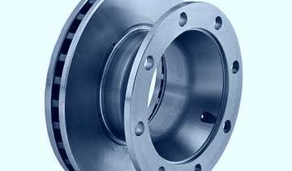
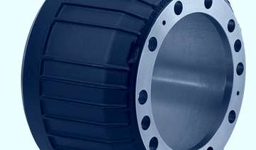
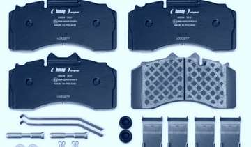

Fren Diski
Ölçüm, yüzey kontrolü ve kaliper uyumlu değişim.
Kaliperden dorse aksına, pnömatik valften mekanik fren-yay sistemlerine kadar ağır vasıta fren sistemlerinde bakım ve onarım hizmeti veriyoruz.

Ölçüm, yüzey kontrolü ve kaliper uyumlu değişim.

Dingil aks grubunda kampana ve pabuç bakımı.

Aşınma kontrolü ve marka uyumlu değişim.
Piston, kılavuz ve conta bakımıyla söküm, revizyon ve montaj.
Fren körüğü (diyafram) değişimi ve hava kaçağı kontrolü.
ABS/EBS kontrol ünitesi arıza tespiti, bağlantı ve sensör kontrolü.
Disk fren kaliperlerinde söküm, revizyon ve montaj yapıyoruz. BPW, HALDEX, WABCO, MERITOR ve KNORR marka kaliper tamir takımlarıyla çalışıyoruz.
Basınç kontrol ve pnömatik valflerde arıza tespiti, bakım ve değişim yapıyoruz. Hava devresinde sızıntı kontrolü hizmetin bir parçasıdır.
Dorse fren sistemleri ve dingil aks grubunda periyodik bakım, ayar ve parça yenileme çalışması yürütüyoruz.
Kampana, balata ve yay takımlarında bakım, değişim ve ayar yapıyoruz. Mekanik fren sisteminin bütünü kontrol edilir.
Hava sistemi ventillerinin revizyonu ve tamirini yapıyoruz; basınç kayıplarına karşı erken teşhis ve onarım sağlıyoruz.
Hava hattı rekor ve bağlantı parçalarında servis ve tedarik sağlıyoruz; montaj sonrası sızdırmazlık kontrolü yapılır.
Arızayı bize tarif edin, doğru hizmet grubuna yönlendirelim.